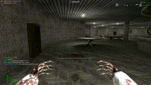
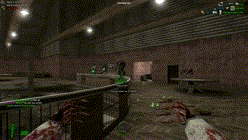
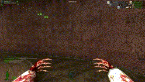

Feign Death
 To pretend you are dead as a zombie you simply need to press shift, in order to get back up again press shift once more.
Please be advised not all zombies can feign death.
Zombie Vision
In order to use zombie vision press F and press F again to switch off the mode and return to normal.
Change Zombie
To change your zombie model simply press F3 which will open a new menu, to select your desired boss menu there's an option located at the top left hand side of the zombie selection menu.